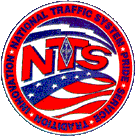

Miami Valley Traffic Net Information
Serving Dayton, OH and Surrounding Areas
The Miami Valley Traffic Net meets weekly on Monday evenings at 7:00 PM local time and as activated.
Use the Montgomery County ARES K8MCA repeater 146.640 (Offset: -0.6 MHz, PL Tone: 123.0)
Net Manager: Frank Brewster, KC8HTP
The National Traffic System (NTS) is a structure that allows for rapid movement of traffic from origin to destination and training amateur operators to handle written traffic and participate in directed nets.
During disasters or other emergencies, radiograms are used to communicate information critical to saving lives or property, or to inquire about the health or welfare of a disaster victim.
- ARRL
